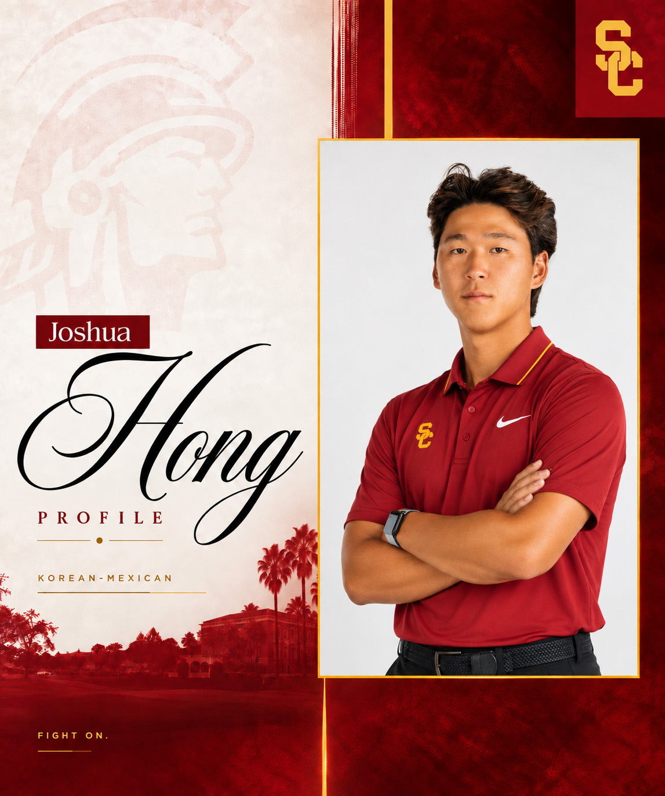

JOSHUA HONG
USC MEN’S GOLF STUDENT-ATHLETE
Freshman Season Foundation
Joshua’s completed 2025–26 freshman season at UTSA remains preserved as the verified NCAA foundation of his collegiate profile before joining USC Men’s Golf.
71.73
Raw Avg
32/33
Counting
1 / 5
Win / Top-10
Record
UTSA Season Avg
Across 33 official rounds and 11 NCAA tournaments, Joshua recorded one individual win, three top-3 finishes, five top-10 finishes, 19 par-or-better rounds, six sub-70 scorecards, and a new UTSA single-season scoring average record.
His freshman archive includes tournament-by-tournament results, scoring context, official recognition, and the verified record that supported his transition into USC Men’s Golf.
Current Schedule & Results
USC Season Tracking & Summer Results
Current tournament status, 2026 summer amateur results, upcoming USC schedule, scoring metrics, and 2026–27 sophomore-season performance data are organized in the current statistics archive.
Introduction
Joshua Hong (b. 2007) is a Korean-Mexican collegiate golfer and USC Men’s Golf student-athlete from Guadalajara, Mexico.
He joined USC Men’s Golf for the 2026–27 season after completing his freshman year in NCAA Division I at the University of Texas at San Antonio (UTSA).
His completed 2025–26 UTSA freshman season remains preserved on this site as the verified foundation of his NCAA profile, including tournament results, scoring data, official recognition, and lineup reliability.
His current record is organized around USC sophomore-season preparation, 2026 summer amateur competition, upcoming collegiate schedule tracking, and continued long-term development.
His individual technical development has also included work with Bryan Gathright as part of his broader competitive development.
This site serves as an independent personal record archive of Joshua’s USC Men’s Golf chapter, completed UTSA freshman-season record, junior background, official results, media references, and long-term competitive development.
Before focusing on competitive golf, Joshua developed his athletic foundation through multiple sports, including structured tennis training beginning at age 7 and a brief period of baseball around ages 11–12. His early athletic background contributed to coordination, footwork, competitive habits, and training discipline before his full transition into golf.
As a USC Men’s Golf student-athlete, Joshua’s current chapter is organized around sophomore-season preparation, summer amateur competition, stronger collegiate fields, and continued long-term development. His completed freshman season at UTSA remains the verified NCAA foundation of his profile, while his USC chapter now represents the next competitive environment for his growth.

Profile Summary
| Full Name | Joshua Hayoung Hong |
| Born | 2007, Guadalajara, Mexico |
| Nationality | Korean-Mexican |
| Languages | Spanish, Korean, English |
| Program / Class | USC Men’s Golf · Sophomore |
| Height | 5′10″ (1.78 m) |
| Prior Sports | Tennis, Baseball |


Early Years & Heritage
Joshua was born in Guadalajara, Jalisco, and raised in a Korean household. He grew up in a Mexican social environment while maintaining Korean language use and family routines at home. His upbringing reflected consistent exposure to both cultural contexts during his early development.
Joshua has represented Mexico in competition and identifies with both his Mexican nationality and Korean heritage. His background is characterized by the integration of these dual cultural values, which inform his approach to competitive golf and personal development.
A Late Start, Built Through Structure and Discipline
Joshua began playing golf at age 12. Prior to golf, he participated in other organized sports, which provided an athletic foundation for his transition to competitive golf.
His development has involved structured training schedules, repetitive skill work, and regular technical feedback from coaches. His completed freshman season at UTSA reflected a process-driven approach to collegiate competition and continued progression within NCAA Division I golf.
🇲🇽 MEXICO
🇰🇷 KOREA


NIL & Compliance Overview
Joshua maintains full NCAA eligibility and operates in accordance with university, conference, and applicable federal regulations. All NIL-related activity remains aligned with institutional compliance frameworks and conference bylaws in order to maintain NCAA eligibility and amateur status.
Compliance Note: As an international student-athlete (F-1 visa), NIL-related opportunities are reviewed and structured in accordance with applicable federal immigration guidance and university compliance procedures. All external activity remains subject to eligibility requirements while academic and athletic priorities remain unchanged.
External References
Official and external pages related to Joshua’s current USC roster profile, recognized ranking platforms, and verified career records.
The 2025–26 UTSA freshman-season references remain preserved in the full Reference & Links archive.
Inside Joshua's Golf
FOLLOW ON INSTAGRAM